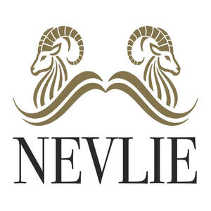

Trade Mark Journal No.2025/021 23 May 2025
UK00004198625 4 May 2025 (18,25)

- Class 18
- Leather; Leather and imitation leather; Leather and imitations of leather; Leather cloth; Tanned leather; Saddlery of leather; Polyurethane leather; Leather handbags; Laces (Leather -); Leather laces; Synthetic leather; Leather for shoes; Leather straps; Straps (Leather -); Leather thongs; Leather briefcases; Leather purses; Boxes of leather or leather board; Leather for furniture; Leather bags; Leather wallets; Vegan leather; Studs of leather; Imitation leather; Leather (Imitation -); Straps of leather [saddlery]; Leather pouches; Pouches of leather; Leather cord; Moleskin [imitation of leather]; Moleskin [imitation leather]; Leather cords; Girths of leather; Leather leashes; Leashes (Leather -); Imitations of leather; Leather for harnesses; Leather suitcases; Imitation leather bags; Unworked leather; Bands of leather; Briefcases [leather goods]; Handbags made of leather; All-purpose leather straps; Briefcases made of leather; Leather boxes; Boxes of leather; Leather twist; Leather luggage straps; Leather cases; Leather thread; Thread (Leather -); Trimmings of leather for furniture; Furniture (Leather trimmings for -); Leather trimmings for furniture; Labels of leather; Leather shoulder belts; Belts (Leather shoulder -); Straps made of imitation leather; Key-cases of leather and skins; Valves of leather; Bags made of leather; Furniture coverings of leather; Coverings (Furniture -) of leather; Harness made from leather; Bags made of imitation leather; Leather bags and wallets; Straps (Leather shoulder -); Leather shoulder straps; Cases of imitation leather; Chin straps, of leather; Tote bags; Duffel bags; Duffle bags; Bags; Carry-all bags; Grocery tote bags; Drawstring bags; Cross-body bags; Crossbody bags; Carry-on bags; Sling bags; Diaper bags; Toiletry bags; Duffel bags for travel; Bucket bags; Shoulder bags; Belt bags and hip bags; Luggage bags; Nose bags [feed bags]; Bags (Nose -) [feed bags]; Kit bags; Clutch bags; Carrying bags; Nappy bags; Belt bags; Shoe bags; Messenger bags; Cloth bags; Umbrella bags; Canvas bags; Garment bags; Leather shopping bags; Tool bags of leather, empty; Mesh shopping bags; Mesh bags for shopping; Souvenir bags; Canvas shopping bags; Waterproof bags; Toilet bags; Make-up bags; Makeup bags; Attaché bags; Hand bags; Suit bags; Bags [envelopes, pouches] of leather, for packaging; Bags [envelopes, pouches] for packaging of leather; Bags [envelopes, pouches] of leather for packaging; Bum bags; Reusable shopping bags; Bags for clothes; Baby carrying bags; Gym bags; Overnight bags; Book bags; Courier bags; Roll bags; Nose bags; Wheeled bags; Tool bags, empty; Shoe bags for travel; String bags for shopping; Barrel bags; Travel bags; Bags for travel; Waist bags; Gladstone bags; Boot bags; Cosmetic bags; Camping bags; All-purpose carrying bags; Towelling bags; Garment bags for travel made of leather; Sling bags for carrying infants; Garment bags for travel; Bags (Garment -) for travel; Travel luggage; Travel baggage; Airline travel bags; Travel cases; Travel garment covers; Traveling bags; Waist pouches; Pouches; Drawstring pouches; Belt pouches; Pouches, of leather, for packaging; Pouch baby carriers; Key pouches; Felt pouches; Handbag straps; Tool pouches, sold empty; Tool pouches sold empty; Pocket wallets; Wallets (Pocket -); Japanese utility pouches (shingen-bukuro); Straps for coin purses; Sling bags for carrying babies; Waist packs; Envelopes, of leather, for packaging; Wrist mounted carryall bags; Pouches for holding make-up, keys and other personal items; Adhesive tags of leather for bags; Wallets with card compartments; Shoulder straps; Shoulder belts; Children's shoulder bags; Shoulder belts [straps] of leather; Hip bags; Wrist mounted purses; Spats and knee bandages for horses; Horse leg wraps; Saddle pads; Carriers for suits, shirts and dresses; Carriers for suits, for shirts and for dresses; Saddle belts; Wallets for attachment to belts; Fitted belts for luggage; Hat boxes of leather; Boxes of leather (Hat -); Hat boxes for travel; Imitation leather hat boxes; Carryalls; Clutch handbags; Clutch purses [handbags]; Straps for handbags; Clutch purses; Snakeskin; Small clutch purses; Satchels; Purse frames [handbags]; Clutches [purses]; Handbags, purses and wallets; Casual bags; Leather luggage tags; Handbags; Multi-purpose purses; Straps for luggage; Luggage straps; Purses [leatherware]; Slouch handbags; Purses; Fashion handbags; Luggage, bags, wallets and other carriers; Straps for suitcases; Card wallets [leatherware]; Chain mesh purses; Lockable luggage straps; Travelling bags made of imitation leather; Travelling bags made of leather; Travelling bags [leatherware]; Handbags for ladies; Ladies handbags; Leather coin purses; Pocketbooks [handbags]; Evening handbags; Purse frames; Purses, not of precious metal [handbags]; Briefcases [leatherware]; Coin purse frames; Handbags made of imitations leather; Gentlemen's handbags; Luggage tags [leatherware]; Handbags for men; Textile shopping bags; Coin purses; Wash bags for carrying toiletries; Purses, not made of precious metal [handbags]; Gent's handbags; Knitting bags; Evening purses; Knitted bags; Small purses; Toiletry bags sold empty; Travelling bags.
- Class 25
- Shoes; Insoles [for shoes and boots]; Insoles for shoes and boots; High-heeled shoes; Wooden shoes [footwear]; Dress shoes; Sneakers [footwear]; Slip-on shoes; Leather shoes; Tongues for shoes and boots; Tennis shoes; Jogging shoes; Ballet shoes; Esparto shoes or sandals; Walking shoes; Rubber shoes; Shoes soles for repair; Hiking shoes; Pullstraps for shoes and boots; Esparto shoes or sandles; Basketball shoes; Athletic shoes; Running shoes; Volleyball shoes; Soccer shoes; Sandals and beach shoes; Sneakers; Waterproof shoes; Shoe soles; Heel pieces for shoes; Dance shoes; Snowboard shoes; Canvas shoes; Wooden shoes; Shoes for foot volleyball; Foot volleyball shoes; Shoes for leisurewear; Cycling shoes; Sports shoes; Platform shoes; Golf shoes; Footwear soles; Soles for footwear; Sport shoes; Athletics shoes; Yoga shoes; Mountaineering shoes; Hockey shoes; Baby shoes; Insoles for footwear; Roller shoes; Bowling shoes; Riding shoes; Football shoes; Baseball shoes; Gymnastic shoes; Rain shoes; Aqua shoes; Boxing shoes; Training shoes; Handball shoes; Fittings of metal for boots and shoes; Skiing shoes; Beach shoes; Flat shoes; Nursing shoes; Shoes for casual wear; Leisure shoes; Stiffeners for shoes; Shoes for infants; Rugby shoes; Heel protectors for shoes; Footwear; Women's shoes; Work shoes; Flip-flops for use as footwear; Tap shoes; Hidden heel shoes; Apres-ski shoes; Deck shoes; Driving shoes; Pumps [footwear]; Infants' shoes; Shoe soles for repair; Sandals; Studs for football shoes; Spiked running shoes; Anglers' shoes; Cleats for attachment to sports shoes; Boots; Trainers [footwear]; Shoe straps; Protective metal members for shoes and boots; Inner socks for footwear; Rubbers [footwear]; Wedge sneakers; Shoe uppers; Basketball sneakers; Knitted baby shoes; Pants; Capri pants; Chino pants; Corduroy pants; Denim pants; Leggings [trousers]; Dress pants; Stretch pants; Sweat pants; Jogging pants; Trousers; Ski pants; Warm-up pants; Trousers shorts; Yoga pants; Trouser socks; Waterproof pants; Corduroy trousers; Nappy pants [clothing]; Lounge pants; Leather pants; Cargo pants; Weatherproof pants; Camouflage pants; Track pants; Trouser straps; Sleep pants; Wind pants; Snowboard trousers; Maternity pants; Trousers for sweating; Ski trousers; Babies' pants [underwear]; Skirt suits; Baby pants; Cycling pants; Leggings [leg warmers]; Pants (Am.); Snow pants; Jeans; Hunting pants; Waterproof trousers; Baselayer bottoms; Padded pants for athletic use; Pajama bottoms; Culotte skirts; Pirate pants; Babies' pants [clothing]; Horse-riding pants; Bib shorts; Nurse pants; Tap pants; Moisture-wicking sports pants; Trousers of leather; Casual trousers; Fleece shorts; Jogging bottoms [clothing]; Rain trousers; Denim jeans; Sweat shorts; Sports pants; Riding trousers; Boy shorts [underwear]; Men's dress socks; Short trousers; Tracksuit bottoms; Romper suits; Sweat bottoms; Slacks; Corduroy shirts; Shorts [clothing]; Sweatpants; Men's and women's jackets, coats, trousers, vests; Pantaloons; Golf trousers; Bib tights; Denim jackets; Jogging bottoms; Bottoms [clothing]; Shorts; Men's underwear; Denims [clothing]; Sleeveless jackets; Swim shorts; Pleated skirts; Dress shirts; Breeches for wear; Blouson jackets; Jacket liners; Yoga bottoms; Sliding shorts; Sweatshorts; Hooded sweat shirts; Sweat jackets; Vest tops; Culottes; Sweat-absorbent underwear; Briefs [underwear]; Infants' trousers; Dress suits; Gussets for bathing suits [parts of clothing]; Shirts for suits; Baselayer tops; Blue jeans; Turtleneck shirts; Padded shorts for athletic use; Pleated skirts for formal kimonos (hakama); Jogging suits; Sweat suits; Underwear; Sleeved jackets; Gussets for tights [parts of clothing]; Gussets for underwear [parts of clothing]; Maternity leggings; Fleece jackets; Underwear (Anti-sweat -); Anti-sweat underwear; American football pants; Sweat shirts; Pocket kerchiefs; Shoulder wraps; Shoulder scarves; Shoulder straps for clothing; Shoulder wraps [clothing]; Shoulder wraps for clothing; Neck warmers; Neck scarves; Wrist warmers; Neck gaiters; Arm warmers [clothing]; Knee warmers [clothing]; Neck scarves [mufflers]; Mufflers [neck scarves]; Mufflers as neck scarves; Head wear; Neck tube scarves; Neck scarfs [mufflers]; Waist belts; Ankle boots; Crew neck sweaters; Leg warmers; Knee highs; Windproof jackets; Suede jackets; Leather jackets; Rainproof jackets; Bomber jackets; Quilted jackets [clothing]; Waterproof jackets; Jackets [clothing]; Camouflage jackets; Sheepskin jackets; Motorcycle jackets; Knit jackets; Wind-resistant jackets; Shell jackets; Fur jackets; Weatherproof jackets; Padded jackets; Snowboard jackets; Reversible jackets; Ski jackets; Rain jackets; Riding jackets; Casual jackets; Warm-up jackets; Polar fleece jackets; Fur coats and jackets; Dinner jackets; Wind jackets; Heavy jackets; Hunting jackets; Bed jackets; Light-reflecting jackets; Smoking jackets; Safari jackets; Jackets being sports clothing; Jackets (Stuff -) [clothing]; Stuff jackets [clothing]; Down jackets; Track jackets; Donkey jackets; Short overcoat for kimono (haori); Fishing jackets; Fleece vests; Windproof clothing; Korean outer jackets worn over basic garment [Magoja]; Sports jackets; Stuff jackets; Long jackets; Quilted vests; Wind resistant jackets; Leather clothing; Clothing of leather; Leather (Clothing of -); Rainproof clothing; Turtleneck sweaters; Fishermen's jackets; Gloves [clothing]; Gloves as clothing; Outerwear; Bib overalls for hunting; Waistcoats [vests]; Coats of denim; Denim coats; Duffle coats; Camouflage vests; Wind-resistant vests; Leather suits; Suits of leather; Golf clothing, other than gloves; Frock coats; Turtleneck pullovers; Leather waistcoats; Camouflage gloves; Leather coats; Duffel coats; Leather dresses; Waterproof clothing; Leather belts [clothing]; Motorcycle gloves; Water-resistant clothing; Oilskins [clothing]; Fingerless gloves as clothing; Waterproof boots; Long sleeved vests; Knickers; Dungarees; Trousers for children; Underpants; Pockets for clothing; Shirt yokes; Yokes (Shirt -); Collared shirts; Woollen tights; Jodhpurs; Open-necked shirts; Suits made of leather; Pocket squares [clothing]; Leather garments; Pinafore dresses; Boot cuffs; Khakis; Shirts; Short-sleeved shirts; Long-sleeved shirts; Short-sleeve shirts; Short-sleeved T-shirts; Polo shirts; Shirt fronts; Knit shirts; Button-front aloha shirts; Camouflage shirts; Mock turtleneck shirts; Casual shirts; Shirts and slips; Pique shirts; Maternity shirts; Rugby shirts; Football shirts; Woven shirts; Aloha shirts; Soccer shirts; Golf shirts; T-shirts; Night shirts; Ramie shirts; Sleeveless jerseys; Sport shirts; Sleep shirts; Tennis shirts; Fishing shirts; Yoga shirts; Under shirts; Button down shirts; Hunting shirts; Tee-shirts; Sports shirts with short sleeves; Sports shirts; Moisture-wicking sports shirts; Printed t-shirts; V-neck sweaters; Jerseys [clothing]; Embroidered clothing; American football shirts; Polo sweaters; Maternity shorts; Sleeveless pullovers; Wristbands [clothing]; Undershirts; Padded shirts for athletic use; Polo knit tops; Rugby shorts; Tracksuit tops; Overalls; Collars [clothing]; Mock turtleneck sweaters; Golf shorts; Turtleneck tops; Sweatshirts; Clothes; Suspender belts; Garter belts; Tuxedo belts; Fabric belts; Suspender belts for women; Belts of textile; Belts [clothing]; Belts for clothing; Suspender belts for men; Belts made of leather; Fabric belts [clothing]; Belts (Money -) [clothing]; Money belts [clothing]; Belts made from imitation leather; Wrap belts for kimonos (datemaki); Beanie hats; Hats; Fascinator hats; Bobble hats; Cloche hats; Bucket hats; Fur hats; Toques [hats]; Woolly hats; Top hats; Baseball hats; Ski hats; Baseball caps and hats; Fake fur hats; Ushankas [fur hats]; Fashion hats; Rain hats; Sun hats; Mitres [hats]; Miters [hats]; Frames (Hat -) [skeletons]; Hat frames [skeletons]; Hats (Paper -) [clothing]; Paper hats [clothing]; Party hats [clothing]; Beach hats; Sports caps and hats; Small hats; Sedge hats (suge-gasa); Paper hats for wear by chefs; Paper hats for wear by nurses; Chefs' hats; Caps [headwear]; Caps being headwear; Beanies; Bonnets [headwear]; Paper hats for use as clothing items; Headgear for wear; Fedoras; Knitted gloves; Clothing for horse-riding [other than riding hats]; Cap visors; Knitted caps; Headgear; Head scarves; Woollen socks; Headwear; Mittens; Sock suspenders; Leather headwear; Bucket caps; Visors [hatmaking]; Visors [headwear]; Visors being headwear; Valenki [felted boots]; Bootees (woollen baby shoes); Head sweatbands; Fur cloaks; Mitts [clothing]; Knitted clothing; Gloves; Sun visors [headwear]; Face masks [fashion wear] ; Fishing headwear; Skull caps; Lace boots; Woolen clothing; Slipper socks; Toe socks; Fingerless gloves; Gloves for apparel; Mountaineering gloves; Snowboard gloves; Winter gloves; Cycling Gloves; Ski gloves; Riding gloves; Riding Gloves; Gloves for cyclists; Driving gloves; Warm gloves for touchscreen devices; Thermal gloves for touchscreen devices; Gloves including those made of skin, hide or fur; Coveralls; Handwarmers [clothing]; Men's sandals; Japanese style sandals of leather; Espadrilles; Toe straps for Japanese style sandals [zori]; Toe straps for zori [Japanese style sandals]; Imitation leather dresses; Thong sandals; Pedicure sandals; Bath sandals; Soles for japanese style sandals; Baby sandals; Uppers for Japanese style sandals; Japanese style sandals (zori); Japanese style clogs and sandals; Uppers of woven rattan for Japanese style sandals; Beach footwear; Ladies' sandals; Slipper soles; Toe straps for Japanese style wooden clogs; Footwear uppers; Uppers (Footwear -); Japanese footwear of rice straw (waraji); Japanese style sandals of felt; Leather slippers; Japanese toe-strap sandals (asaura-zori); Casual footwear; Footwear made of wood; Welts for footwear; Footwear (Welts for -); Footwear [excluding orthopedic footwear]; Fishing footwear; Japanese style wooden clogs (geta); Flip-flops; Anklets [socks]; Climbing footwear; Clothing made of leather; Slippers made of leather; Clothing made of imitation leather.
PEACE BAZAAR LTD